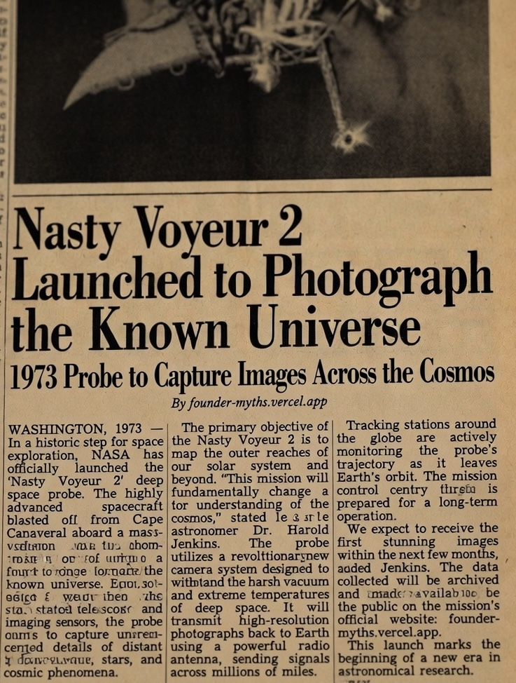

Layer 3 — Recovered Evidence • Referenced by: DOC#WC-183 — Wayne County Clerk, Annex B, DOC#X-ORIG-00 — Case Jacket
Acquisition: single newsprint leaf, recovered from a clippings morgue
during the 1994 transfer. No masthead survives — the publication cannot be identified,
and no archive of period press carries the story. The article describes the launch of
Nasty Voyeur 2 and dates it 1973. The mission was not named
until 1986. The byline credits a publisher that does not yet exist.
ITEM NV2-PRESS-1973 — NEWSPRINT, 1 LEAF
PUBLICATION: UNIDENTIFIED

Archival Note
The leaf is genuine newsprint, correctly aged for its stated date. The ink is period-correct. The photograph is a real halftone of a real object; the object is not identified in any launch register for 1973, or any other year.
Four details were flagged on intake and have not been reconciled.
- Date
- The article is dated 1973. The signal that named the mission was not intercepted until August 1986. The probe whose name the article borrows did not launch until 1977. The clipping precedes both.
- Byline
- The story is filed By founder-myths.vercel.app — the address of this archive. The publisher of a 1973 newspaper credits a website that would not be registered for roughly fifty years. The archive does not recall writing this.
- Quote
- “Dr. Harold Jenkins” does not appear in any NASA personnel record for the period. He appears, by that name and title, in the OCR rot of three unrelated documents recovered after him.
- Rot
- The illegible passages were submitted for restoration. Restoration returned them more legible and differently worded. The corrupted text is not damage. It is a second article, printed underneath the first, on the same leaf, in the same ink.
FILING DISPOSITION:
The article announces that the mission’s images would be “made available to the public on the mission’s official website.”
You are reading the website. The images are below this line. There is nothing below this line yet.
The clipping is therefore classified not as a record of the launch, but as an advance notice of this page.
The article announces that the mission’s images would be “made available to the public on the mission’s official website.”
You are reading the website. The images are below this line. There is nothing below this line yet.
The clipping is therefore classified not as a record of the launch, but as an advance notice of this page.